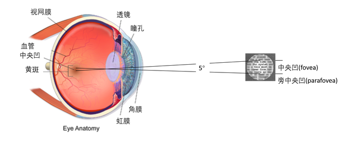
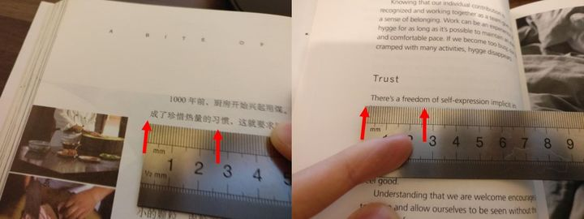
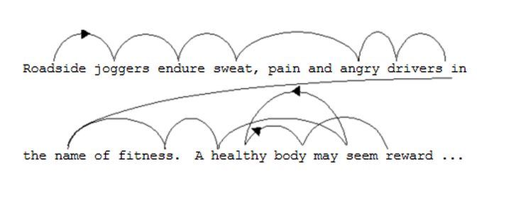
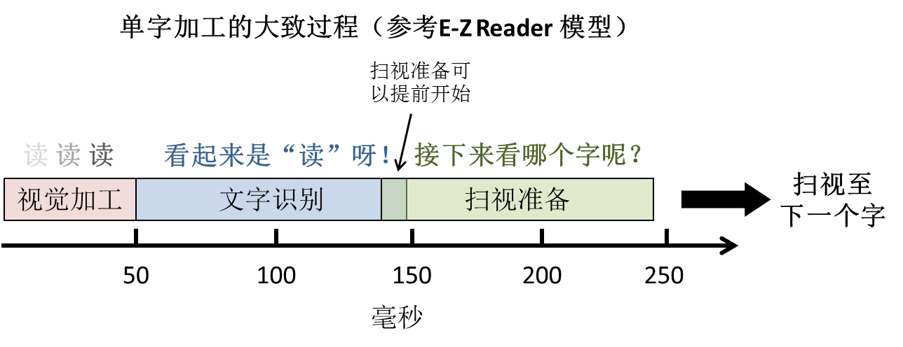

大家在学习的过程中可能会有像这样的困惑：“这么厚的课本我怎么读的过来啊？”
“我今年要读24本书可第一本还没有读到24页呢！” “要是有办法提高读书的速度就好了。”
于是乎出现了这么一种良药叫速读（speed reading），宣称可以包治百病。随便在百度上一搜“速读”二字，相关结果就有1千万个。有扯“全脑速读”的，有卖精英特培训软件的。常见的速读技巧包括扩大视野法，略读法（skimming），引导法（meta guiding），抑制默读法（subvocalisation inhibition）等。
扩大视野法旨在训练人眼在一次注视中加工大量的视觉信息（如整页纸）。 略读法大多建立在扩大视野的基础上，在一页纸几个关键的地理位置跳着读（比如说只看页面中央，或者以蛇形的轨迹扫视页面）。 引导法是以外界物体如手指或笔来引导视野的移动。引导的越快，读的越快。 抑制默读法要求阅读时不要在脑中读出声，以加快阅读的速度。
所有速读法都有意无意的忽视了阅读是一种认知活动，是大脑将文字转化成意义的过程。这样一个认知过程是需要时间的。速读培训利用了人们想要走捷径的心理来做商业运作。但是他们不会告诉你单纯的提高扫视文字的速度只是一种套路，是治标不治本的。
1. 一目十行太荒唐
扩大视野法宣称人能通过训练（比如看3D图啊，控制视距啊）达到一目十行的能力。然而人眼的生理结构否定了这种说法 [1]。人眼内主要的视锥细胞和视神经紧密的分布在中央凹（fovea）这个地方。中央凹是视网膜中视觉最清晰最敏锐的区域，也决定了人眼只能看清视野中心5°范围内的信息（见下图所示）。视觉中心直径5°外8°内（旁中央凹parafovea）的视觉信息就比较模糊了。在8°外的信息就完全看不清楚。

5°视野能看清楚多少行字呢？假设你看书的距离为30 cm，5°视野所能覆盖的圆形直径是tan(2.5°) x 30 cm x 2 = 2.6 cm。拿《舌尖上的中国》做例子，2.6 cm = 7-8个汉字。英文的书籍呢大约就3个字的样子（见下图）。这可比十行差远了呀，连一行字都要好几眼才能清楚的看完！

2. 文字加工速度有上限
科学家通过眼动仪（eye tracker）观察阅读中眼睛移动的轨迹发现：由于眼可视范围有限，即便是熟练的阅读者也得逐字逐句的阅读 [2]。

上图描绘了具有代表性的阅读轨迹。上图中每个弧线“落地”处代表一个注视点（fixation），反映对当前文字的加工。当前文字加工的差不多了大脑会指挥眼球向下一字跳动。这种快速的跳动叫做扫视（saccade）。上图弧线箭头所示方向为扫视的方向。根据英文和中文的阅读习惯，眼睛大多自左向右的跳动。有时候如果一个字没看清楚，或者上下文不连贯，眼睛会返回（向左）前面的内容，然后再继续向右跳。
完成文字加工和扫视需要多少时间呢？
根据现有的阅读模型（如E-Z Reader [3]），阅读中对文字的加工可以分成三大部分：(1) 视觉处理，(2) 文字识别，(3) 扫视准备。
视觉处理指的是人眼清晰的辨认出当前字的过程。视觉信息从视网膜传导至大脑的视觉皮层大约要50毫秒左右的时间。 文字识别就是识别文字并理解字的意。文字识别的时间长短不定，是由字的各种属性决定的。识别高频字（如“我”）比识别低频字（如“椱”）所需时间短。识别具体字（如“房”）比识别抽象字（如“义”）要快。文字识别平均下来至少要花75-100毫秒左右的时间。 扫视准备即大脑决定下一眼看哪里，并指挥眼球的运动。这需要视觉信息来预览周边字的排列位置，同时和文字识别互动决定下一眼是往哪里看（比如往下读还是回头重读）。这一个过程最少要花100-150毫秒。
把这三部分所需时间加起来，文字加工所需时间大约在225-300毫秒之间。这与现实中熟练阅读者的阅读速度相当，大约是267-200字/分的速度。

在E-Z Reader模型里，扫视准备是可以在文字识别结束前开始的。假设你读的都是高频的字，文字识别进行了50毫秒时大脑就觉得差不多可以准备扫视了。这样完全加工一个字则只要50（视觉处理）+50（文字识别）+100（扫视准备）=200毫秒，也就是一分钟300字左右。如果略过大多数的功能字（如“的”，“是”，“从”等），那可以在理解不受显著影响的情况下把阅读速度再往上提升（略读时文字加工本身的速度并没有实际提高，只是有些字跳过了）。
视觉处理和文字识别是阅读必需的。可扫视却不一定是。如果移除扫视的需求的话，是不是就可以解放阅读的速度呢？
3. 工作记忆容量有上限
现在市面上有一些阅读的APP，把文字用快速连续视觉呈现（rapid serial visual presentation; RSVP）的方式来呈现文字。文字在视觉中心依次快速的呈现。一方面省去了扫视的需求，另一方面可以调节呈现的速度来提高单位时间接受的信息量（见下面视频）。Spritz Introduction.mp4 – 腾讯视频视频
这个设想很有意思，看起来也蛮有前景。然而过目快忘的也快。大脑是需要工作记忆（working memory）来暂时储存，加工和操作信息的 [4]。工作记忆的容量有限，比如我们记手机号码的时候11个数字一口气记不下来，就得把号码分成二或三组数字来记。研究发现工作记忆一次大约能处理7单位或4组块（chunk）的信息 [5,6]。这里大小不重要，关键是要知道工作记忆的存储量是有限的。
如果我们就简单的假设工作记忆每秒能存储加工7个单元字。换算成加工速度就是每字142.8毫秒，即420字/分。如果连续呈现的速度高于这个值，比如600字/分。工作记忆就超负荷，有很多字过了目但没有完成加工。
连续呈现法是一种逐字阅读法，在每个字上都要花时间。呈现的越快，每个字分到的加工时间越短。这就造成了很多重点的内容字没有给足时间加工，宝贵的时间却浪费在了无意义的功能字上。由于连续呈现不允许暂停下来思考，也不允许回头二次阅读，因此没有完成加工的重点字得不到深度加工也不能重温。这样虽然过目的文字变多，但是对文段的理解反而是要大打折扣。
4. 速读都是套路，多读才是王道
阅读是一个认知过程，而眼动是反映这一系列认知过程的表现。大脑处理文字信息是需要时间的，一个是文字识别和眼动准备需要时间，一个是工作记忆单位时间内存储能力有限。速读技巧的出发点是从表面上机械的提高眼睛移动的速度或文字呈现的速度，是本末倒置的。如果对文字认知的速度跟不上，眼动或字呈现的再快，大脑也不能及时消化阅读的内容。要想提高阅读能力，只有多读这一条路可走。
- **多读书能提高文字加工的效率。**娴熟的阅读者的眼动轨迹是很系统有规律的 [2]。他们在每个注视点花的时间要比慢读者短，这说明他们对单字的加工效率高。他们也比较少回头重读已经读过的内容，说明其对已读文字的加工理解比较到位，不需要重温。我们前面讲到文字识别所需时间是和文字的属性有关。其中一个属性就是字频。越是高频的字，大脑越熟悉，加工起来就快。俗话说熟能生巧。通过多读书，大脑就能重复的练习文字加工，从而增加所阅读字的绝对频率，提高加工的效率。研究发现会双语的人对母语的阅读的速度就比对二外的阅读要快，因为他们在母语上的阅读量大 [7]。小孩从一年级上学到成年，阅读单字加工的时间逐年缩短，扫视的距离逐年变长，说明了上学阅读量的积累与阅读速度有很大的关联 [8]。
- **多读书能加强知识积累，使略读成为可能。**当单字加工的效率达到极限以后，我们只能跳过一些无关紧要的内容来提高阅读速度。知识积累厚实的阅读者看了上文，下文已经猜了八九不离十。他们就可以自信的跳过冗长的文段，通过扫视重点字来把握文段的大意。实验证明所谓速读者确实是通过大段的略读来达到600-700字/分的阅读速度 [9]。与慢读者相比，虽然速读者不能有效的回忆细节（因为略过了），但是他们在把握文段大意上与慢读者并无区别。可是如果缺乏相关知识储备的话，就很难准确把握文段大意。那这时候就只能逐字逐句阅读来消化生僻的内容。但是别着急，任何新内容都有一个由生到熟的过程。生僻的内容读的多了，也就熟能生巧了。
结语
我们为了有好身材学习各种健身方法买健身会员，可别忘了好身材是要一天天坚持练出来的。
我们想成为大厨买了一堆菜谱，若是不亲身实践勤加练习的话这些谱只是一堆废纸而已。
我们为了提高学习效率花钱学习速读的技巧，殊不知速读都是套路，多读才是王道。
参考文献
- 人眼 – 解剖学. 大英百科全书 见：human eye | anatomy
- Rayner, K. (1998). Eye movements in reading and information processing: 20 years of research. Psychological Bulletin, 124(3), 372–422.
- Reichle, E. D., Rayner, K., & Pollatsek, A. (2003). The E-Z Reader model of eye-movement control in reading: Comparisons to other models. Behavioral and Brain Sciences, 26(4), 445–526.
- Baddeley, A. (1992). Working memory. Science, 255(5044): 556-559.
- Miller, G. A. (1956). The magical number seven, plus or minus two: some limits on our capacity for processing information. Psychological review, 63(2), 81.
- Cowan, N. (2001). The magical number 4 in short-term memory: a reconsideration of mental storage capacity. Behavioral and Brain Sciences, 24(1), 87-114.
- Altarriba, J., Kroll, J. F., Sholl, A., & Rayner, K. (1996). The influence of lexical and conceptual constraints on reading mixed-language sentences: Evidence from eye fixations and naming times. Memory & Cognition, 24(4), 477-492.
- McConkie, G. W., Zola, D., Grimes, J., Kerr, P. W., Bryant, N. R., & Wolff, P. M. (1991). Children’s eye movements during reading. In J. F. Stein (Ed.), Vision and visual dyslexia (pp. 251-262). London: Macmillan Press.
- Just, M. A., Carpenter, P. A., & Masson, M. E. J. (1982). What eye fixations tell us about speed reading and skimming. (Eye-lab Technical Report) Carnegie-Mellon University, Pittsburgh, PA.